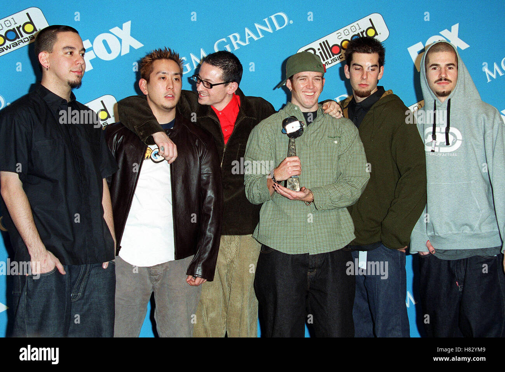
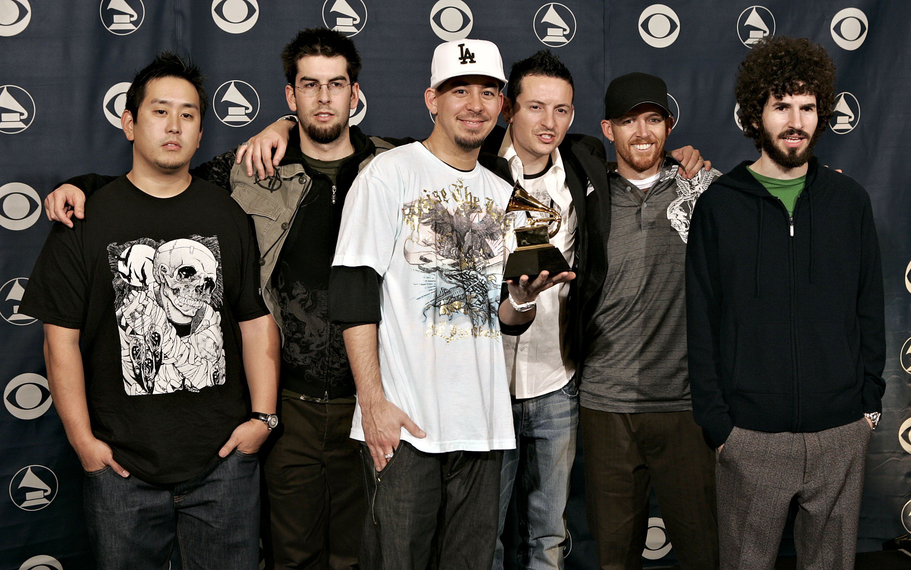
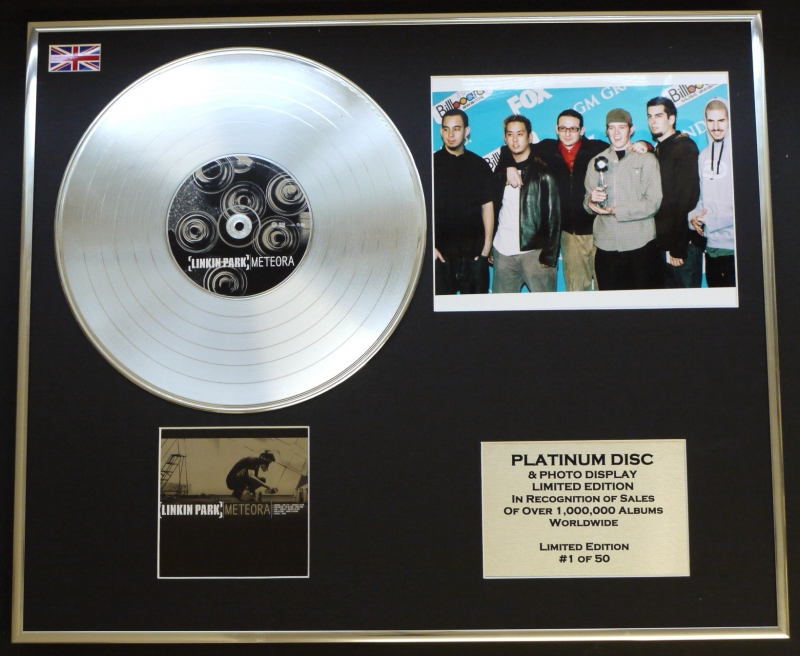

Premios Grammy
- Mejor Interpretación de Hard Rock por "Crawling" (2002): Este tema se convirtió en un himno para muchos, abordando temas de lucha personal y vulnerabilidad. La poderosa interpretación vocal de Chester Bennington resonó con una amplia audiencia.
- Mejor Colaboración de Hard Rock por "Numb/Encore" (2006) con Jay-Z: Esta colaboración innovadora fusionó rock y hip-hop, mostrando la versatilidad de la banda y ampliando su alcance a nuevas audiencias.

American Music Awards
- Artista de Rock Favorito (2002, 2003): Este premio refleja su enorme popularidad en el género del rock durante los primeros años de su carrera.
- Banda Favorita de Pop/Rock (2003): Este reconocimiento subraya su capacidad para atraer a una base de fans diversa, cruzando las barreras entre rock y pop.

MTV Video Music Awards
- Mejor Video de Rock por "Somewhere I Belong" (2003): Este video, con su fuerte carga emocional, resonó profundamente con los fans, consolidando su lugar en la cultura pop.
- Mejor Video de Grupo por "Numb" (2004): El video de "Numb" se convirtió en un clásico, y su mensaje de descontento y búsqueda de identidad tocó a muchos.

Billboard Music Awards
- Linkin Park ha sido destacado como uno de los artistas más influyentes en la música moderna, con varios premios que celebran sus logros en ventas y popularidad en las listas. 
World Music Awards
- Mejor Grupo del Mundo (2003): Un honor significativo que reconoce su impacto global en la música.
- Mejor Álbum del Mundo por "Hybrid Theory" (2003): Este álbum no solo definió el sonido de una generación, sino que también catapultó a la banda al estrellato internacional. 
Reconocimientos en la industria
Linkin Park ha sido considerado para el Rock and Roll Hall of Fame en la lista de nominados para 2024, un gran honor que refleja su influencia y legado duradero en el rock y más allá. Esta inclusión destaca su impacto en la música a lo largo de las décadas.
- Su álbum debut "Hybrid Theory" ha sido certificado como Diamante por la RIAA, representando más de 10 millones de copias vendidas solo en los Estados Unidos. Este álbum es considerado uno de los más influyentes de la década de 2000, estableciendo un nuevo estándar en la música rock.
- Otros álbumes como "Meteora" también han recibido certificaciones de platino, destacando el éxito continuo de la banda en el mercado. 